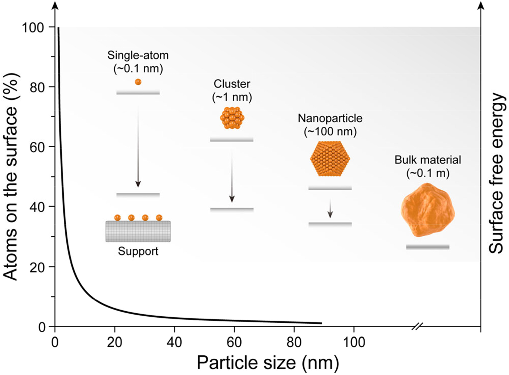

✨ Size dependence refers to the phenomenon where physical, chemical, optical, and magnetic properties of materials change dramatically as their dimensions are reduced to the nanoscale.
Nanomaterials
Nanomaterials are defined as having at least one dimension within this critical range, where bulk rules stop applying.
At this scale, optical, mechanical, and thermal characteristics shift significantly from their bulk counterparts.
Changes are primarily driven by quantum confinement effects and massive increases in specific surface area.
Surface-to-Volume Ratio
As particle size decreases, the fraction of atoms located at the surface increases dramatically.
In nanoscale materials, this effect becomes very pronounced due to the high surface-to-volume ratio.
Consequently, the specific surface area increases sharply with decreasing particle size
In bulk materials composed of nanoscale grains (such as nanocrystalline ceramics and metals),
mechanical properties are strongly influenced by the grain size.
Surface atoms have fewer neighboring atoms compared to atoms in the bulk.
Due to the coordination, surface atoms possess higher energy and exhibit greater chemical reactivity.

- This enhanced surface activity leads to:
- Lowering of the melting point
- Formation of thermodynamically stable intermediate phases
- Significantly increased catalytic activity of the material
Surface Energy Dominance
The total free energy (G) of a material has two major contributions:
✦ Gibbs Free Energy
\(G\)
=
\(G\)bulk
+
\(\gamma\)
\(A\)
where
\(G\)
-
total Gibbs free energy
\(G\)bulk
-
bulk contribution to free energy
\(\gamma\)
-
surface energy \(\text{(J m}^{-2}\text{)}\)
\(A\)
-
surface area
As particle size decreases, volume scales as \(r^3\) and surface area scales as \(r^2\).
Therefore, the surface area-to-volume ratio scales as \(\sim \frac{1}{r}\).
At the nanoscale, the surface term \((\gamma A)\) becomes comparable to or larger than the bulk free energy,
causing surface energy to dominate the material behaviour.
| Property Category | Effect of High Surface Energy | Resulting Property Variation |
|---|---|---|
| Thermodynamic | Large fraction of high-energy surface atoms | Reduced thermodynamic stability |
| Increased surface contribution to free energy | Stabilization of metastable, intermediate phases | |
| Thermal | Weakly coordinated surface atoms | Lower melting point (Gibbs-Thomson effect) |
| Enhanced surface diffusion | Easier sintering and coalescence | |
| Chemical Reactivity | Unsaturated surface bonds | Increased chemical reactivity |
| High density of active sites | Enhanced adsorption of molecules | |
| Catalytic | More exposed surface atoms and edges | Higher catalytic activity |
| Facet-dependent surface energy | Selective reaction pathways | |
| Mechanical | High grain boundary volume | Grain-size-dependent strengthening |
| Dominance of interfaces | Inverse Hall-Petch effect at very small grain sizes |